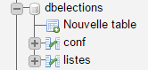
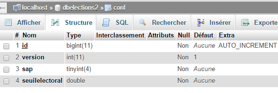
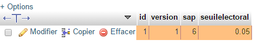
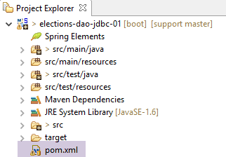
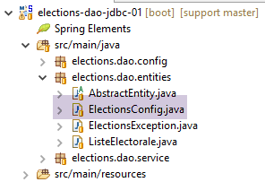
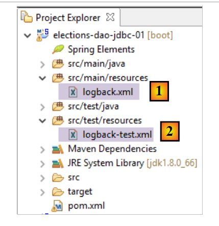
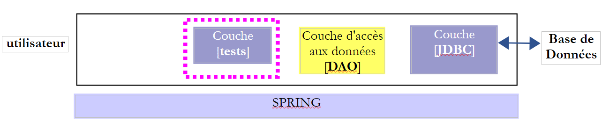
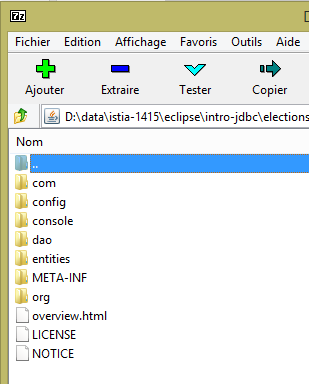
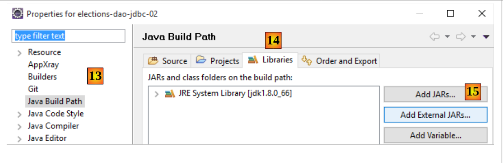

7. [TD]: تنفيذ الطبقة [DAO] من TD باستخدام API JDBC
الكلمات المفتاحية: قواعد البيانات العلائقية، API JDBC، SQLException.
لنعد إلى بنية الطبقات لتطبيقنا:
 |
يتم تسجيل البيانات اللازمة للانتخابات في قاعدة بيانات MySQL [dbelections]
7.1. Support
 |
يحتوي المجلد [support / chap-07] [1] على:
- مشاريع Eclipse الخاصة بهذا الفصل [2]؛
- البرنامج النصي SQL لإنشاء قاعدة البيانات MySQL [dbelections] [3]؛
7.2. قاعدة البيانات [dbelections]
المهمة المطلوبة: قم بإنشاء قاعدة البيانات MySQL و [dblelections] باتباع الإجراء الموضح في الفقرة 6.4.2.
قاعدة البيانات [dbelections] هي قاعدة بيانات MySQL تحتوي على جدولين:
 |
تحتوي الجدولة [conf] على معلومات تكوين الانتخابات:
 |
- [id]: مفتاح أساسي ذاتي التزايد؛
- [version]: رقم إصدار السجل - يمكن تجاهله هنا؛
- [sap]: عدد المقاعد الشاغرة؛
- [seuilelectoral]: الحد الأدنى الذي يتم عنده استبعاد القائمة؛
محتواها هو كما يلي:
 |
تحتوي الجدول [listes] على قوائم المرشحين للانتخابات:
 |
- [id]: مفتاح أساسي يتم زيادة قيمته تلقائيًا؛
- [version]: رقم إصدار السجل - يمكن تجاهله هنا؛
- [nom]: اسم القائمة؛
- [voix]: أصوات القائمة - لا تُعرف إلا بعد إدخال المستخدم في الطبقة [présentation]؛
- [sieges]: عدد المقاعد التي تم الحصول عليها - لا يُعرف إلا بعد حساب الطبقة [métier]؛
- [elimine]: يساوي 1 إذا تم استبعاد القائمة، و0 في حالة عدم الاستبعاد - لا يُعرف إلا بعد حساب الطبقة [métier]؛
محتوى الجدول [listes] هو كما يلي:
 |
يُسمى البرنامج النصي SQL لإنشاء قاعدة البيانات [dbelections] باسم [dbelections.sql] وهو موجود على الخادم. ورمزه هو كما يلي:
-- phpMyAdmin SQL تفريغ
-- الإصدار 4.0.4
-- http://www.phpmyadmin.net
--
-- العميل: localhost
-- تم إنشاؤه في: الأربعاء 11 مارس 2015 الساعة 12:20
-- إصدار الخادم: 5.6.12-log
-- إصدار PHP: 5.4.12
SET SQL_MODE = "NO_AUTO_VALUE_ON_ZERO";
SET time_zone = "+00:00";
/*!40101 SET @OLD_CHARACTER_SET_CLIENT=@@CHARACTER_SET_CLIENT */;
/*!40101 SET @OLD_CHARACTER_SET_RESULTS=@@CHARACTER_SET_RESULTS */;
/*!40101 SET @OLD_COLLATION_CONNECTION=@@COLLATION_CONNECTION */;
/*!40101 SET NAMES utf8 */;
--
-- قاعدة البيانات: `dbelections`
--
CREATE DATABASE IF NOT EXISTS `dbelections` DEFAULT CHARACTER SET utf8 COLLATE utf8_swedish_ci;
USE `dbelections`;
-- --------------------------------------------------------
--
-- هيكل الجدول `conf`
--
CREATE TABLE IF NOT EXISTS `conf` (
`id` bigint(11) NOT NULL AUTO_INCREMENT,
`version` int(11) NOT NULL DEFAULT '1',
`sap` tinyint(4) NOT NULL,
`seuilelectoral` double NOT NULL,
PRIMARY KEY (`id`)
) ENGINE=InnoDB DEFAULT CHARSET=utf8 COLLATE=utf8_swedish_ci AUTO_INCREMENT=2 ;
--
-- محتوى الجدول `conf`
--
INSERT INTO `conf` (`id`, `version`, `sap`, `seuilelectoral`) VALUES
(1, 1, 6, 0.05);
-- --------------------------------------------------------
--
-- هيكل الجدول `listes`
--
CREATE TABLE IF NOT EXISTS `listes` (
`id` bigint(11) NOT NULL AUTO_INCREMENT,
`version` int(11) NOT NULL DEFAULT '1',
`nom` varchar(20) COLLATE utf8_swedish_ci NOT NULL,
`voix` int(11) NOT NULL,
`sieges` int(11) NOT NULL,
`elimine` tinyint(1) NOT NULL DEFAULT '0',
PRIMARY KEY (`id`),
UNIQUE KEY `nom` (`nom`)
) ENGINE=InnoDB DEFAULT CHARSET=utf8 COLLATE=utf8_swedish_ci AUTO_INCREMENT=8 ;
--
-- محتوى الجدول `listes`
--
INSERT INTO `listes` (`id`, `version`, `nom`, `voix`, `sieges`, `elimine`) VALUES
(1, 21, 'A', 10, 1, 0),
(2, 22, 'B', 20, 2, 0),
(3, 21, 'C', 30, 3, 0),
(4, 13, 'D', 40, 3, 0),
(5, 17, 'E', 50, 6, 0),
(6, 18, 'F', 60, 1, 0),
(7, 19, 'G', 70, 2, 0);
/*!40101 SET CHARACTER_SET_CLIENT=@OLD_CHARACTER_SET_CLIENT */;
/*!40101 SET CHARACTER_SET_RESULTS=@OLD_CHARACTER_SET_RESULTS */;
/*!40101 SET COLLATION_CONNECTION=@OLD_COLLATION_CONNECTION */;
7.3. مشروع Eclipse
 |
سيكون مشروع Eclipse للطبقة [DAO] كما يلي:
 |
- تحتوي الحزمة [elections.dao.entities] على الكائنات التي تعالجها الطبقة [DAO]؛
- تحتوي الحزمة [elections.dao.service] على تنفيذ الطبقة [DAO]؛
- تحتوي الحزمة [elections.dao.config] على تكوين الطبقة [DAO]
- تحتوي الحزمة [elections.dao.junit] على فئة اختبار JUnit للمشروع؛
- تحتوي الحزمة [elections.dao.console] على فئة اختبار قابلة للتنفيذ؛
7.4. تكوين مشروع Maven
 |
الملف [pom.xml] الذي يكوّن مشروع Maven هو التالي:
<project xmlns="http://maven.apache.org/POM/4.0.0" xmlns:xsi="http://www.w3.org/2001/XMLSchema-instance"
xsi:schemaLocation="http://maven.apache.org/POM/4.0.0 http://maven.apache.org/xsd/maven-4.0.0.xsd">
<modelVersion>4.0.0</modelVersion>
<groupId>istia.st.elections</groupId>
<artifactId>elections-dao-jdbc-01</artifactId>
<version>0.0.1-SNAPSHOT</version>
<parent>
<groupId>org.springframework.boot</groupId>
<artifactId>spring-boot-starter-parent</artifactId>
<version>1.2.7.RELEASE</version>
</parent>
<properties>
<project.build.sourceEncoding>UTF-8</project.build.sourceEncoding>
<java.version>1.8</java.version>
</properties>
<dependencies>
<!-- MySQL -->
<dependency>
<groupId>mysql</groupId>
<artifactId>mysql-connector-java</artifactId>
</dependency>
<!-- Spring -->
<dependency>
<groupId>org.springframework</groupId>
<artifactId>spring-context</artifactId>
</dependency>
<!-- Tomcat Jdbc -->
<dependency>
<groupId>org.apache.tomcat</groupId>
<artifactId>tomcat-jdbc</artifactId>
</dependency>
<!-- مكتبة jSON -->
<dependency>
<groupId>com.fasterxml.jackson.core</groupId>
<artifactId>jackson-databind</artifactId>
</dependency>
<!-- Spring Boot -->
<dependency>
<groupId>org.springframework.boot</groupId>
<artifactId>spring-boot</artifactId>
<scope>test</scope>
</dependency>
<!-- اختبار Spring Boot -->
<dependency>
<groupId>org.springframework.boot</groupId>
<artifactId>spring-boot-starter-test</artifactId>
<scope>test</scope>
</dependency>
<!-- تسجيل Spring Boot -->
<dependency>
<groupId>org.springframework.boot</groupId>
<artifactId>spring-boot-starter-logging</artifactId>
</dependency>
</dependencies>
<!-- المكونات الإضافية -->
<build>
<plugins>
<plugin>
<artifactId>maven-assembly-plugin</artifactId>
<configuration>
<archive>
<manifest>
<mainClass>config.AppConfig</mainClass>
</manifest>
</archive>
<descriptorRefs>
<descriptorRef>jar-with-dependencies</descriptorRef>
</descriptorRefs>
</configuration>
</plugin>
<!-- لتثبيت أداة المشروع في مستودع Maven المحلي -->
<plugin>
<groupId>org.apache.maven.plugins</groupId>
<artifactId>maven-surefire-plugin</artifactId>
<version>2.18.1</version>
</plugin>
</plugins>
</build>
</project>
هذا الملف مشابه للملف الموصوف في الفقرة 6.5.1. وقد أُجريت عليه التعديلات التالية:
- الأسطر 8-12: تم تعريف مشروع Maven أم. يحدد مشروع [spring-boot-starter-parent] (السطر 10) عددًا كبيرًا جدًا من التبعيات مع إصداراتها. عند استخدام إحداها (الأسطر 19-57)، لا داعي لتحديد الإصدار، حيث إن الإصدار محدد في مشروع Maven الأصلي؛
- الأسطر 40-51: التبعيات اللازمة لفئة الاختبار في المشروع. هذه التبعيات لها السمة [<scope>test</scope>]، مما يعني أنها ضرورية فقط لفئات المجلد [src / test / java]. لن يتم تضمين هذه التبعيات في الأرشيف النهائي للمشروع؛
- الأسطر 53-56: ستستخدم مكتبة [spring-boot-starter-logging] بواسطة Spring لعرض السجلات على الشاشة؛
- الأسطر 14-17: خصائص تكوين Maven:
- السطر 15: يشير إلى أن ملفات المصدر مكتوبة بلغة UTF-8؛
- السطر 16: يشير إلى أن المُجمِّع الذي يجب استخدامه يجب أن يكون من المستوى 1.8؛
7.5. كيانات طبقة [DAO]
 |
- [ElectionsConfig] هو نموذج الكائن المرتبط بصف في الجدول [CONF]؛
- [ListeElectorale] هو نموذج الكائن المرتبط بصف في الجدول [LISTES]؛
- [AbstactEntity] هي الفئة الأم للفئتين السابقتين. وهي تعمم الحقول [id, version] المشتركة بين الفئتين؛
- [ElectionsException] هي فئة استثنائية؛
7.5.1. الفئة [ElectionsException]
 |
تم وصف الفئة [ElectionsException] في الفقرة 4.3. نعيد ذكر رمزها:
package ...;
import java.io.Serializable;
import java.util.ArrayList;
import java.util.List;
// فئة الاستثناءات لتطبيق الانتخابات
// الاستثناء غير خاضع للرقابة
public class ElectionsException extends RuntimeException implements Serializable {
// سلسلة ID
private static final long serialVersionUID = 1L;
// الحقول المحلية
private int code;
private List<String> erreurs;
// المنشئون
public ElectionsException() {
super();
}
public ElectionsException(int code, Throwable e) {
// الأصل
super(e);
// محلي
this.code = code;
this.erreurs = getErreursForException(e);
}
public ElectionsException(int code, String message, Throwable e) {
// الأصل
super(message,e);
// محلي
this.code = code;
this.erreurs = getErreursForException(e);
}
public ElectionsException(int code, String message) {
// الأصل
super(message);
// محلي
this.code = code;
List<String> erreurs = new ArrayList<>();
erreurs.add(message);
this.erreurs = erreurs;
}
public ElectionsException(int code, List<String> erreurs) {
// الأصل
super();
// محلي
this.code = code;
this.erreurs = erreurs;
}
// قائمة رسائل الخطأ الخاصة باستثناء
private List<String> getErreursForException(Throwable th) {
// يتم استرداد قائمة رسائل الخطأ الخاصة بالاستثناء
Throwable cause = th;
List<String> erreurs = new ArrayList<>();
while (cause != null) {
// يتم استرداد الرسالة فقط إذا كانت !=null وليست فارغة
String message = cause.getMessage();
if (message != null) {
message = message.trim();
if (message.length() != 0) {
erreurs.add(message);
}
}
// السبب التالي
cause = cause.getCause();
}
return erreurs;
}
// مُحدِّدات القيم ومُعيِّنات القيم
...
}
يتميز الكائن [ElectionsException] بمعلومتين:
- السطر 16: رمز خطأ؛
- السطر 17: قائمة برسائل الخطأ المرتبطة بمكدس الاستثناءات التي حدثت؛
- تحتوي الفئة على 5 منشئات (السطور 20 و24 و32 و40 و50)؛
- الأسطر 59-76: تسمح الطريقة [getErreursForException] باسترداد رسائل الخطأ من مكدس الاستثناءات؛
7.5.2. الفئة [AbstractEntity]
 |
الفئة [AbstractEntity] هي كما يلي:
package elections.dao.entities;
import java.io.Serializable;
import com.fasterxml.jackson.core.JsonProcessingException;
import com.fasterxml.jackson.databind.ObjectMapper;
public abstract class AbstractEntity implements Serializable {
private static final long serialVersionUID = 1L;
// الحقول
protected Long id;
protected Long version;
// المنشئات
public AbstractEntity() {
}
public AbstractEntity(Long id, Long version) {
this.id = id;
this.version = version;
}
// التوقيع
public String toString() {
try {
return new ObjectMapper().writeValueAsString(this);
} catch (JsonProcessingException e) {
e.printStackTrace();
return null;
}
}
// الوصول والضبط
...
}
وهي تخزن الحقول [ID, NOM] من صفوف الجداول [CONF] و [LISTES] (الصفوف 8-9).
- السطر 8: تحتوي الفئة على السمة [Abstract] التي تشير إلى أنه لا يمكن إنشاء مثيل لها. ولا يمكن إلا أن تكون فئة مشتقة؛
- الأسطر 26-33: توقيع jSON للكائن؛
- السطر 28: يتم إرجاع السلسلة jSON من [this]. إذا كان [this] يمثل كائنًا مشتقًا من [AbstactEntity] عند التنفيذ، فسيتم الحصول على السلسلة jSON الخاصة بالكائن المشتق. وبالتالي، لن تحتاج الفئات المشتقة إلى تعريف طريقة [toString]. فطريقة الفئة الأصلية كافية؛
7.5.3. الفئة [ElectionsConfig]
 |
الفئة [ElectionsConfig] هي كما يلي:
package elections.dao.entities;
public class ElectionsConfig extends AbstractEntity {
private static final long serialVersionUID = 1L;
// الحقول
private int nbSiegesAPourvoir;
private double seuilElectoral;
// المنشئات
public ElectionsConfig() {
}
public ElectionsConfig(Long id, Long version, int nbSiegesAPourvoir, double seuilElectoral) {
// الأصل
super(id, version);
// الحقول المحلية
this.nbSiegesAPourvoir = nbSiegesAPourvoir;
this.seuilElectoral = seuilElectoral;
}
// الوصول والضبط
...
}
- السطر 4: الفئة توسع الفئة [AbstractEntity]؛
- السطران 8-9: يخزنان معلومات أعمدة [SAP, SEUILELECTORAL] من الجدول [CONF]؛
7.5.4. الفئة [ListeElectorale]
 |
الفئة [ListeElectorale] هي كما يلي:
package elections.dao.entities;
public class ListeElectorale extends AbstractEntity {
// الحقول
private String nom;
private int voix;
private int sieges;
private boolean elimine;
// منشئات
public ListeElectorale() {
}
public ListeElectorale(String nom, int voix, int sieges, boolean elimine) {
// الأصل
super();
// الحقول المحلية
initNom(nom);
initVoix(voix);
initSieges(sieges);
this.elimine=elimine;
}
public ListeElectorale(Long id, Long version, String nom, int voix, int sieges, boolean elimine) {
// الأصل
super(id, version);
// الحقول المحلية
initNom(nom);
initVoix(voix);
initSieges(sieges);
this.elimine=elimine;
}
// طرق خاصة
private void initNom(String nom) {
this.nom = nom.trim();
if ("".equals(nom)) {
throw new ElectionsException(10, "Le nom ne peut être vide");
}
}
private void initVoix(int voix) {
this.voix = voix;
if (voix < 0) {
throw new ElectionsException(11, "Le nombre de voix ne peut être <0");
}
}
private void initSieges(int sieges) {
this.sieges = sieges;
if (sieges < 0) {
throw new ElectionsException(12, "Le nombre de sièges ne peut être <0");
}
}
// مُستردات ومُعيّنات
public String getNom() {
return nom;
}
public void setNom(String nom) {
initNom(nom);
}
public int getVoix() {
return voix;
}
public void setVoix(int voix) {
initVoix(voix);
}
public int getSieges() {
return sieges;
}
public void setSieges(int sieges) {
initSieges(sieges);
}
public boolean isElimine() {
return elimine;
}
public void setElimine(boolean elimine) {
this.elimine = elimine;
}
}
- السطر 3: الفئة تمتد الفئة [AbstractEntity]؛
- الأسطر 6-9: الفئة تخزن الأعمدة [NOM, VOIX, SIEGES, ELIMINE] من الجدول [LISTES]؛
7.6. تكوين Spring للطبقة [DAO]
 |
 |
الفئة [AppConfig] هي فئة تكوين Spring تقوم بتكوين الوصول إلى قاعدة البيانات على النحو التالي:
package elections.dao.config;
import org.apache.tomcat.jdbc.pool.DataSource;
import org.springframework.cache.CacheManager;
import org.springframework.cache.annotation.EnableCaching;
import org.springframework.cache.concurrent.ConcurrentMapCacheManager;
import org.springframework.context.annotation.Bean;
import org.springframework.context.annotation.ComponentScan;
import org.springframework.context.annotation.Configuration;
@ComponentScan(basePackages = { "elections.dao.service" })
@EnableCaching
public class AppConfig {
// الثوابت
public final static String URL = "jdbc:mysql://localhost:3306/dbelections";
public final static String USER = "root";
public final static String PASSWD = "";
public final static String DRIVER_CLASSNAME = "com.mysql.jdbc.Driver";
public final static String SELECT_LISTES = "SELECT ID, VERSION, NOM, VOIX, SIEGES, ELIMINE FROM LISTES";
public final static String SELECT_CONF = "SELECT ID, VERSION, SAP, SEUILELECTORAL, SAP FROM CONF";
public final static String UPDATE_LISTES = "UPDATE LISTES SET VOIX=?, SIEGES=?, ELIMINE=? WHERE ID=?";
@Bean
public DataSource dataSource() {
// مصدر البيانات TomcatJdbc
DataSource dataSource = new DataSource();
// تكوين الوصول JDBC
dataSource.setDriverClassName(DRIVER_CLASSNAME);
dataSource.setUsername(USER);
dataSource.setPassword(PASSWD);
dataSource.setUrl(URL);
// اتصال مفتوح في البداية
dataSource.setInitialSize(1);
// النتيجة
return dataSource;
}
@Bean
public CacheManager cacheManager() {
return new ConcurrentMapCacheManager("electionsConfig");
}
}
- الأسطر 25-38: سيتم الوصول إلى BD عبر مصدر بيانات [tomcat-jdbc]. تم استخدام هذا النوع من المصادر وشرحه في الفقرة 6.5؛
- الأسطر 17-23: مجموعة من الثوابت الثابتة التي يمكن الوصول إليها من قبل جميع فئات المشروع؛
- السطر 13: التعليق التوضيحي [@Configuration] يجعل من الفئة [AppConfig] فئة تكوين Spring؛
- السطر 11: تشير التعليقات التوضيحية [@ComponentScan] إلى الحزم التي يمكن العثور فيها على كائنات Spring. هنا، سنقوم بتعريف كائن Spring في الحزمة [dao]. التعليق التوضيحي [@ComponentScan] يجعل من الفئة فئة تكوين مما يوفر علينا وضع التعليق التوضيحي [@Configuration]؛
- السطر 12 ينشط إدارة ذاكرة التخزين المؤقت. المبدأ هو التالي:
- نضع التعليق التوضيحي [@Cacheable('nom_du_cache')] على طريقة M. "اسم_ذاكرة_التخزين_المؤقت" هو الاسم المستخدم في السطر 41؛
- عند استدعاء الطريقة M للمرة الأولى، يتم عرض نتائجها ووضعها أيضًا في ذاكرة التخزين المؤقتة المسماة بالتعليق التوضيحي؛
- عندما يتم استدعاء الطريقة M في المرات التالية بنفس المعلمات المستخدمة في المرة الأولى، لا يتم تنفيذها ويكتفي Spring بعرض القيم المخزنة في ذاكرة التخزين المؤقت؛
7.7. تكوين السجلات
 |
يتم تعريف مكتبات السجلات من خلال التبعية التالية في [pom.xml]:
<!-- تسجيل Spring Boot -->
<dependency>
<groupId>org.springframework.boot</groupId>
<artifactId>spring-boot-starter-logging</artifactId>
</dependency>
تؤدي هذه التبعية إلى المكتبات التالية:
 |
مكتبة [logback] هي التي ستتولى السجلات. يتم تكوينها بواسطة ملفين:
- [logback.xml] للفرع الرئيسي للكود؛
- [logback-test.xml] لفرع اختبار الكود. في حالة عدم وجود هذا الملف، يتم استخدام الملف السابق؛
يجب أن يكون هذان الملفان موجودين في [Classpath] الخاص بالمشروع. ولهذا السبب، يتم وضعهما في المجلد:
- [src / main / ressources] للفرع الرئيسي للكود؛
- [src / test / ressources] لفرع اختبار الكود؛
محتوى الملفين هو نفسه هنا:
<configuration>
<appender name="STDOUT" class="ch.qos.logback.core.ConsoleAppender">
<!-- يتم تعيين النوع افتراضيًا للمشفرات
ch.qos.logback.classic.encoder.PatternLayoutEncoder -->
<encoder>
<pattern>%d{HH:mm:ss.SSS} [%thread] %-5level %logger{36} - %msg%n</pattern>
</encoder>
</appender>
<!-- التحكم في مستوى السجلات -->
<root level="info"> <!-- معلومات، تصحيح أخطاء، تحذير -->
<appender-ref ref="STDOUT" />
</root>
</configuration>
يحدث كل شيء في السطر 12 حيث يتم تحديد مستوى المعلومات المطلوب:
- [debug]: المستوى الأكثر تفصيلاً؛
- [off]: لا توجد سجلات؛
- [info]: المستوى العادي للسجلات؛
- [warn]: نفس مستوى [info] بالإضافة إلى رسائل التحذير (warning). تشير هذه الرسائل إلى احتمال وجود خطأ؛
انتقل إلى الوضع [debug] بمجرد ظهور أخطاء أثناء التنفيذ.
7.8. تنفيذ الطبقة [DAO]
 |
 |
واجهة [IDao] للطبقة [DAO] هي كما يلي:
package istia.st.elections.webapi.client.dao;
import istia.st.elections.webapi.client.entities.ElectionsConfig;
import istia.st.elections.webapi.client.entities.ListeElectorale;
public interface IDao {
// تكوين الانتخابات
public ElectionsConfig getElectionsConfig();
// القوائم المتنافسة
public ListeElectorale[] getListesElectorales();
// حفظ نتائج الانتخابات
public void setListesElectorales(ListeElectorale[] listesElectorales);
}
سيكون الهيكل الأساسي للفئة [ElectionsDaoJdbc] التي تنفذ الطبقة [dao] باستخدام قاعدة بيانات كما يلي:
package elections.dao.service;
import java.sql.Connection;
import java.sql.PreparedStatement;
import java.sql.ResultSet;
import java.sql.SQLException;
import org.apache.tomcat.jdbc.pool.DataSource;
import org.springframework.beans.factory.annotation.Autowired;
import org.springframework.cache.annotation.Cacheable;
import org.springframework.stereotype.Component;
import elections.dao.entities.ElectionsConfig;
import elections.dao.entities.ElectionsException;
import elections.dao.entities.ListeElectorale;
@Component
@SuppressWarnings("unused")
public class ElectionDaoJdbc implements IElectionsDao {
@Autowired
private DataSource dataSource;
@Cacheable("electionsConfig")
// الحصول على ملفات تكوين الانتخابات
public ElectionsConfig getElectionsConfig() {
throw new RuntimeException("[getElectionsConfig] not yet implemented");
}
// الحصول على القوائم
public ListeElectorale[] getListesElectorales() {
throw new RuntimeException("[getListesElectorales] not yet implemented");
}
// تعديل القوائم [voix, sieges, elimine]
public void setListesElectorales(ListeElectorale[] listesElectorales) {
throw new RuntimeException("[setListesElectorales] not yet implemented");
}
// -------------------- طرق خاصة
// إدارة finally
private ElectionsException doFinally(int code, ResultSet rs, PreparedStatement ps, Connection connexion) {
// الإغلاق ResultSet
if (rs != null) {
try {
rs.close();
} catch (SQLException e1) {
}
}
// الإغلاق [PreparedStatement]
if (ps != null) {
try {
ps.close();
} catch (SQLException e2) {
}
}
// إغلاق الاتصال
if (connexion != null) {
try {
connexion.close();
} catch (SQLException e3) {
// يتم إرجاع [ElectionsException]
return new ElectionsException(code, e3);
}
}
// لا توجد استثناءات
return null;
}
// إدارة التقاط
private ElectionsException doCatchException(int code1, int code2, Connection connexion, Throwable th) {
// يتم إنشاء [ElectionsException]
ElectionsException ex1 = new ElectionsException(code1, th);
// إلغاء المعاملة
try {
if (connexion != null) {
connexion.rollback();
}
} catch (SQLException e2) {
}
// إرجاع الاستثناء
return ex1;
}
}
- السطر 24: التعليق التوضيحي [@Cacheable] هو تعليق توضيحي لـ Spring يطلب تخزين ("تخزين مؤقت") نتائج الطريقة [getElectionsConfig]. يمكن القيام بذلك هنا لأن محتوى الجدول [CONF] لا يتغير أبدًا. ولن يكون من الممكن وضع هذا التعليق التوضيحي على الطريقة [getListesElectorales] لأن محتوى الجدول [LISTES] يتغير بمرور الوقت؛
- تُرجع الطريقتان [doCatchException] و [doFinally] نوعًا [ElectionsException]. تُرجع الطريقة [doFinally] مؤشرًا من النوع null إذا تمت تحرير الموارد دون أخطاء؛
المهمة المطلوبة: اكتب الفئة [ElectionDaoJdbc] مستوحياً من الفئة [IntroJdbc02] التي تمت دراستها في الفقرة 6.5.2.
7.9. فئة الاختبار [Main]
 |
 |
الفئة [Main] هي كما يلي:
package elections.dao.console;
import java.util.ArrayList;
import java.util.List;
import org.springframework.context.annotation.AnnotationConfigApplicationContext;
import elections.dao.config.AppConfig;
import elections.dao.entities.ElectionsConfig;
import elections.dao.entities.ElectionsException;
import elections.dao.entities.ListeElectorale;
import elections.dao.service.IElectionsDao;
public class Main {
// مصدر البيانات
private static IElectionsDao dao;
public static void main(String[] args) {
// استرداد مرجع الطبقة [DAO] بعد إنشاء مثيل لسياق Spring
try (AnnotationConfigApplicationContext ctx = new AnnotationConfigApplicationContext(AppConfig.class)) {
// استرداد مصدر البيانات
dao = ctx.getBean(IElectionsDao.class);
} catch (Exception e) {
System.out.println("Les erreurs suivantes se sont produites lors de l'initialisation du contexte Spring -------");
for (String erreur : getErreursForThrowable(e)) {
System.out.println(erreur);
}
// النهاية
return;
}
// قراءة BD
ElectionsConfig electionsConfig = null;
ListeElectorale[] listes;
try {
// محتوى الجدولين
electionsConfig = dao.getElectionsConfig();
listes = dao.getListesElectorales();
} catch (ElectionsException e) {
System.out.println("Les erreurs suivantes se sont produites lors de la lecture des tables ----------");
for (String erreur : e.getErreurs()) {
System.out.println(erreur);
}
// النهاية
return;
}
// كل شيء سار على ما يرام - العرض
System.out.println(String.format("Nombre de sièges à pourvoir : %d", electionsConfig.getNbSiegesAPourvoir()));
System.out.println(String.format("Seuil électoral : %5.2f", electionsConfig.getSeuilElectoral()));
System.out.println("Listes candidates----------------");
for (ListeElectorale liste : listes) {
System.out.println(liste);
}
}
// طرق خاصة ------------------
private static List<String> getErreursForThrowable(Throwable th) {
// نسترد قائمة رسائل الخطأ الخاصة بالاستثناء
Throwable cause = th;
List<String> erreurs = new ArrayList<>();
while (cause != null) {
// نسترد الرسالة فقط إذا كانت !=null وليست فارغة
String message = cause.getMessage();
if (message != null) {
message = message.trim();
if (message.length() != 0) {
erreurs.add(message);
}
}
// السبب التالي
cause = cause.getCause();
}
return erreurs;
}
}
- الأسطر 21-31: استرداد مرجع على الطبقة [DAO]؛
- السطر 21: يتم استخدام صيغة تسمى try_with_resources. وصيغتها هي كما يلي:
try (T ressource=expression) {
// استغلال الموارد
...
}
- (تابع)
- يجب أن ينفذ النوع T في السطر 1 واجهة [java.lang.AutoCloseable]؛
- عند الخروج من كتلة الأسطر 1-4، يتم تحرير المورد من النوع [java.lang.AutoCloseable] تلقائيًا سواء حدثت استثناءات أم لا. سيتعرف من يعرفون لغة C# هنا على نظير صيغي ووظيفي لعبارة using (T resource=expression)؛
- الأسطر 40-49: استخدام الطبقة [DAO] للحصول على محتوى الجداول [CONF] و [LISTES]؛
- الأسطر 41-47: يتم اختبار ذاكرة التخزين المؤقت [electionsconfig]. وقد تم تعريفها في مكانين:
- في الفئة [ElectionsDaoJdbc]:
@Cacheable("electionsConfig")
public ElectionsConfig getElectionsConfig() {
- (تابع)
- في فئة التكوين [AppConfig]:
@EnableCaching
public class AppConfig {
...
@Bean
public CacheManager cacheManager() {
return new ConcurrentMapCacheManager("electionsConfig");
}
}
- السطر 59: إغلاق سياق Spring؛
- الأسطر 62-67: عرض المعلومات التي تم الحصول عليها؛
النتائج التي تم الحصول عليها باستخدام طبقة [DAO] المُنفذة هي كما يلي:
- الأسطر 2-4: تظهر تأثير ذاكرة التخزين المؤقت:
- تستغرق الاستعلام 1 80 مللي ثانية؛
- تستغرق الاستعلام 2 1 مللي ثانية؛
عند قطع الاتصال بقاعدة البيانات، نحصل على النتائج التالية:
7.10. اختبارات JUnit للفئة [ElectionsDaoJdbc]
 |
 |
الفئة [Test01] هي فئة الاختبار التالية لـ [JUnit]:
package elections.dao.junit;
import org.junit.Assert;
import org.junit.Before;
import org.junit.Test;
import org.junit.runner.RunWith;
import org.springframework.beans.factory.annotation.Autowired;
import org.springframework.boot.test.SpringApplicationConfiguration;
import org.springframework.test.context.junit4.SpringJUnit4ClassRunner;
import elections.dao.config.AppConfig;
import elections.dao.entities.ElectionsConfig;
import elections.dao.entities.ListeElectorale;
import elections.dao.service.IElectionsDao;
@SpringApplicationConfiguration(classes = AppConfig.class)
@RunWith(SpringJUnit4ClassRunner.class)
public class Test01 {
// طبقة [DAO]
@Autowired
private IElectionsDao electionsDao;
@Before
public void init() {
// يتم تنظيف الجدول [LISTES]
// قوائم المنافسة
ListeElectorale[] listes = electionsDao.getListesElectorales();
// يتم تعيين الأصوات والمقاعد على 0 وإزالة القيمة false
int voix = 0;
int sièges = 0;
boolean elimine = false;
for (ListeElectorale liste : listes) {
liste.setVoix(voix);
liste.setSieges(sièges);
liste.setElimine(elimine);
}
// جعل هذه البيانات دائمة بفضل الطبقة [dao]
electionsDao.setListesElectorales(listes);
}
@Test
public void testElections01() {
...
}
}
- السطر 17: التعليق التوضيحي [RunWith]، وهو تعليق توضيحي [JUnit] (السطر 6)، يضمن التكامل مع Spring عبر الفئة [SpringJUnit4ClassRunner]؛
- السطر 16: التعليق التوضيحي [SpringApplicationConfiguration] هو تعليق توضيحي [Spring] (السطر 8) الذي يسمح بتحديد فئات تكوين الاختبار JUnit. هنا يتم تحديد الفئة [AppConfig] المستخدمة لتكوين المشروع. وبذلك تتوفر جميع كائنات Spring المحددة بواسطة فئة التكوين هذه. وبهذه الطريقة يمكن إدخال مرجع في السطرين 21-22 على الطبقة [DAO] التي سيتم اختبارها؛
- السطر 25: تشير التعليقة التوضيحية [Before] إلى طريقة يجب تنفيذها قبل كل اختبار؛
- السطور 26-41: تعيد الطريقة [init] الأصوات والمقاعد في قوائم الجدول [LISTES] إلى الصفر، وتعيّن القيمة المنطقية [elimine] إلى [false]؛
طريقة الاختبار الوحيدة هي التالية:
@Test
public void testElections01() {
System.out.println("testElections01-------------------------------------");
// استرداد تكوين الانتخابات
ElectionsConfig electionsConfig = electionsDao.getElectionsConfig();
int nbSiegesAPourvoir = electionsConfig.getNbSiegesAPourvoir();
double seuilElectoral = electionsConfig.getSeuilElectoral();
Assert.assertEquals(6, nbSiegesAPourvoir);
Assert.assertEquals(0.05, seuilElectoral, 1E-6);
// القوائم المتنافسة
ListeElectorale[] listes = electionsDao.getListesElectorales();
// عرض القيم المقروءة
System.out.println("Nombre de sièges à pourvoir : " + nbSiegesAPourvoir);
System.out.println("Seuil électoral : " + seuilElectoral);
System.out.println("Listes en compétition ---------------------");
for (int i = 0; i < listes.length; i++) {
System.out.println(listes[i]);
}
// يتم تخصيص الأصوات والمقاعد للقوائم
int voix = 0;
int sièges = 0;
boolean elimine = false;
for (ListeElectorale liste : listes) {
liste.setVoix(voix);
liste.setSieges(sièges);
liste.setElimine(elimine);
voix += 10;
sièges += 1;
elimine = !elimine;
}
// جعل هذه البيانات دائمة بفضل الطبقة [dao]
electionsDao.setListesElectorales(listes);
// إعادة قراءة البيانات
ListeElectorale[] listesElectorales2 = electionsDao.getListesElectorales();
// يتم التحقق من البيانات التي تمت قراءتها
Assert.assertEquals(7, listesElectorales2.length);
voix = 0;
sièges = 0;
elimine = false;
for (ListeElectorale liste : listesElectorales2) {
Assert.assertEquals(voix, liste.getVoix());
Assert.assertEquals(sièges, liste.getSieges());
Assert.assertEquals(elimine, liste.isElimine());
voix += 10;
sièges += 1;
elimine = !elimine;
}
System.out.println("Listes en compétition ---------------------");
for (int i = 0; i < listes.length; i++) {
System.out.println(listes[i]);
}
}
- الأسطر 5-9: نتأكد من قدرتنا على استرداد محتوى الجدول [CONF]؛
- الأسطر 11-19: يتم عرض محتوى الجدول [LISTES]. لا توجد اختبارات هنا، فقط فحص بصري؛
- الأسطر 21-35: نقوم بتعديل الجدول [LISTES] في قاعدة البيانات عن طريق إعطاء القوائم قيمًا لحقولها [voix, sieges, elimine]؛
- الأسطر 37-51: نعيد قراءة الجدول [LISTES] ونتحقق من أن النتيجة التي تم الحصول عليها تساوي بالفعل ما تم إدخاله؛
- الأسطر 52-55: التحقق البصري؛
نتائج وحدة التحكم التي تم الحصول عليها باستخدام طبقة [DAO] المُنفذة هي كما يلي:
- الأسطر 1-23: سجلات Spring Test؛
- السطور 25-26: محتوى الجدول [CONF]؛
- الأسطر 27-34: المحتوى الأولي للجدول [LISTES]؛
- الأسطر 35-42: محتوى الجدول [LISTES] بعد تعيين القيم للحقول [voix, sieges, elimine]؛
بالإضافة إلى ذلك، نجح الاختبار JUnit:
 |
7.11. إنشاء الأرشيف [with-dependencies] للطبقة [dao]
المشروع النهائي له البنية التالية:
 |
لنتذكر تكوين Maven للمشروع:
<project xmlns="http://maven.apache.org/POM/4.0.0" xmlns:xsi="http://www.w3.org/2001/XMLSchema-instance"
xsi:schemaLocation="http://maven.apache.org/POM/4.0.0 http://maven.apache.org/xsd/maven-4.0.0.xsd">
<modelVersion>4.0.0</modelVersion>
<groupId>istia.st.elections</groupId>
<artifactId>elections-dao-jdbc-01</artifactId>
<version>0.0.1-SNAPSHOT</version>
<parent>
<groupId>org.springframework.boot</groupId>
<artifactId>spring-boot-starter-parent</artifactId>
<version>1.2.7.RELEASE</version>
</parent>
<dependencies>
<!-- MySQL -->
<dependency>
<groupId>mysql</groupId>
<artifactId>mysql-connector-java</artifactId>
</dependency>
<!-- Spring -->
<dependency>
<groupId>org.springframework</groupId>
<artifactId>spring-context</artifactId>
</dependency>
<!-- Tomcat Jdbc -->
<dependency>
<groupId>org.apache.tomcat</groupId>
<artifactId>tomcat-jdbc</artifactId>
</dependency>
<!-- مكتبة jSON -->
<dependency>
<groupId>com.fasterxml.jackson.core</groupId>
<artifactId>jackson-databind</artifactId>
</dependency>
<!-- Spring Boot -->
<dependency>
<groupId>org.springframework.boot</groupId>
<artifactId>spring-boot</artifactId>
<scope>test</scope>
</dependency>
<!-- اختبار Spring Boot -->
<dependency>
<groupId>org.springframework.boot</groupId>
<artifactId>spring-boot-starter-test</artifactId>
<scope>test</scope>
</dependency>
<!-- تسجيل Spring Boot -->
<dependency>
<groupId>org.springframework.boot</groupId>
<artifactId>spring-boot-starter-logging</artifactId>
</dependency>
</dependencies>
<!-- المكونات الإضافية -->
<build>
<plugins>
<plugin>
<artifactId>maven-assembly-plugin</artifactId>
<configuration>
<archive>
<manifest>
<mainClass>config.AppConfig</mainClass>
</manifest>
</archive>
<descriptorRefs>
<descriptorRef>jar-with-dependencies</descriptorRef>
</descriptorRefs>
</configuration>
</plugin>
<!-- لتثبيت أداة المشروع في مستودع Maven المحلي -->
<plugin>
<groupId>org.apache.maven.plugins</groupId>
<artifactId>maven-surefire-plugin</artifactId>
<version>2.18.1</version>
</plugin>
</plugins>
</build>
</project>
 |
سنقوم بإنشاء ملف jar واحد يحتوي على فئات جميع ملفات jar المذكورة أعلاه بالإضافة إلى فئات مشروع الطبقة [DAO]. ويتم ذلك عن طريق إجراء تعديل في الملف [pom.xml]:
<project xmlns="http://maven.apache.org/POM/4.0.0" xmlns:xsi="http://www.w3.org/2001/XMLSchema-instance"
xsi:schemaLocation="http://maven.apache.org/POM/4.0.0 http://maven.apache.org/xsd/maven-4.0.0.xsd">
<modelVersion>4.0.0</modelVersion>
<groupId>istia.st.elections</groupId>
<artifactId>elections-jdbc-01</artifactId>
<version>0.0.1-SNAPSHOT</version>
<parent>
<groupId>org.springframework.boot</groupId>
<artifactId>spring-boot-starter-parent</artifactId>
<version>1.2.2.RELEASE</version>
</parent>
<properties>
<project.build.sourceEncoding>UTF-8</project.build.sourceEncoding>
<java.version>1.8</java.version>
</properties>
<dependencies>
...
</dependencies>
<!-- المكونات الإضافية -->
<build>
<plugins>
<plugin>
<artifactId>maven-assembly-plugin</artifactId>
<configuration>
<archive>
<manifest>
<mainClass>console.Main</mainClass>
</manifest>
</archive>
<descriptorRefs>
<descriptorRef>jar-with-dependencies</descriptorRef>
</descriptorRefs>
</configuration>
</plugin>
</plugins>
</build>
</project>
- الأسطر 25-37: تكوّن مكونًا إضافيًا لـ Maven لإنشاء ملف jar؛
- السطر 15: يشير إلى إصدار Java الذي سيتم استخدامه للتجميع؛
بمجرد إجراء هذا التعديل، يمكن إنشاء ملف jar بالطريقة التالية [1-10]:
 |
 |
- في [5]، ضع مجلد المشروع باستخدام الزر [6]؛
- في [7]، قم بتسمية تكوين التشغيل؛
- في [8]، ضع قائمة بأهداف Maven المطلوب تنفيذها:
- [clean]: إفراغ المجلد [target] الخاص بالمشروع الذي سيتم وضع ملف jar الذي تم إنشاؤه فيه؛
- [compile]: يقوم بتجميع المشروع؛
- [assembly:single]: يولد ملف jar واحدًا يشمل جميع فئات المشروع وتبعياته؛
 |
- في [9-10]، تأكد من أن لديك JDK (Java Development Kit) وليس JRE (Java Runtime Environment). الفرق هو أن JDK يحتوي على مُجمِّع بينما لا يحتوي JRE على مُجمِّع. إذا لم يكن لديك JDK، فيجب عليك إضافة واحد في [10] مع [11]. للقيام بذلك، اتبع الإجراء الموضح في الفقرة 3.1؛
 |
- في [17]، قم بتنفيذ تكوين التشغيل؛
- في [13]، الأرشيف الذي تم إنشاؤه؛
يمكن فتح هذا الأرشيف باستخدام أداة فك الضغط:
 |
7.12. اختبار أرشيف الطبقة [DAO]
لنقم بإنشاء مشروع Eclipse قياسي (ليس Maven) [1]:
 |
لنقم بنسخ ولصق الحزمة [dao.console] من مشروع [elections-dao-jdbc-01] إلى مشروع [elections-dao-jdbc-02] [2]. تظهر العديد من الأخطاء لأن الفئة [Main] تشير إلى فئات غير موجودة في [Classpath]. سنقوم بتعديل هذا الأخير.
نقوم أولاً بإنشاء مجلد [lib] في المشروع الجديد:
 |
 |
في [9]، نضع الأرشيف الذي تم إنشاؤه في الخطوة السابقة في المجلد [lib] ثم نقوم بتعديل مسار البناء (Build Path) للمشروع:
 |
 |
 |
- إلى [18]، وقمنا باستيراد الأرشيف الخاص بالطبقة [DAO] التي تم إنشاؤها مسبقًا؛
 |
- في [19]، لم يعد المشروع يحتوي على أخطاء؛
يمكننا الآن تشغيل الفئة [Main]. نحصل على نفس النتائج السابقة.